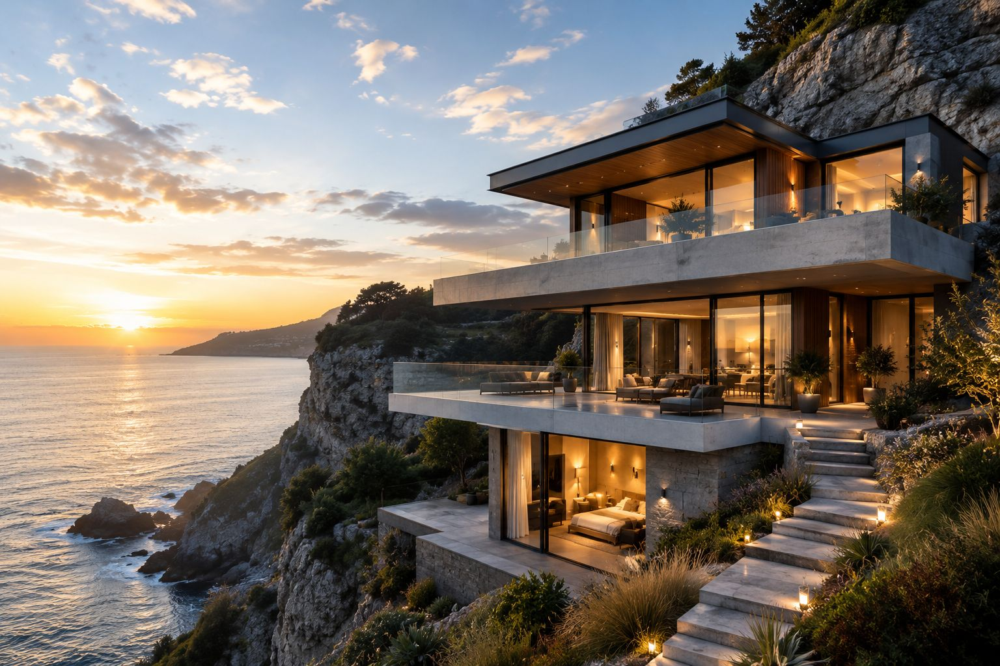
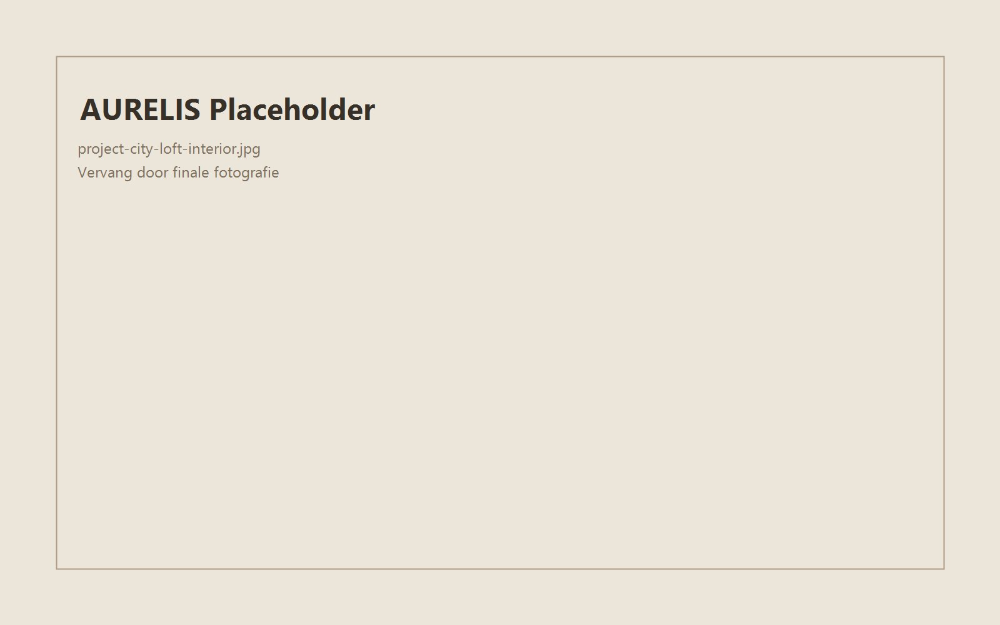
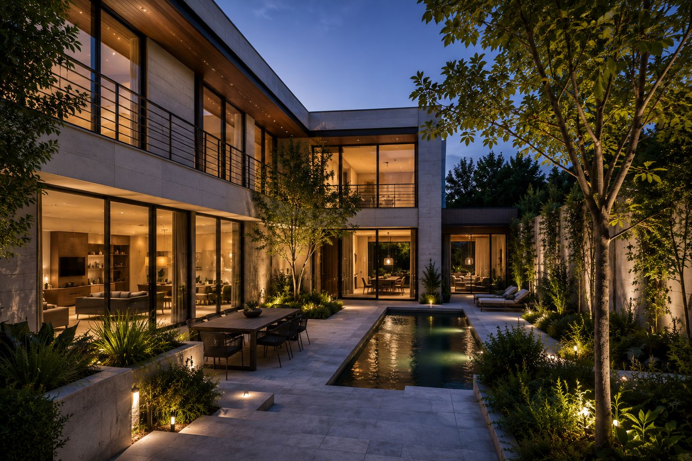
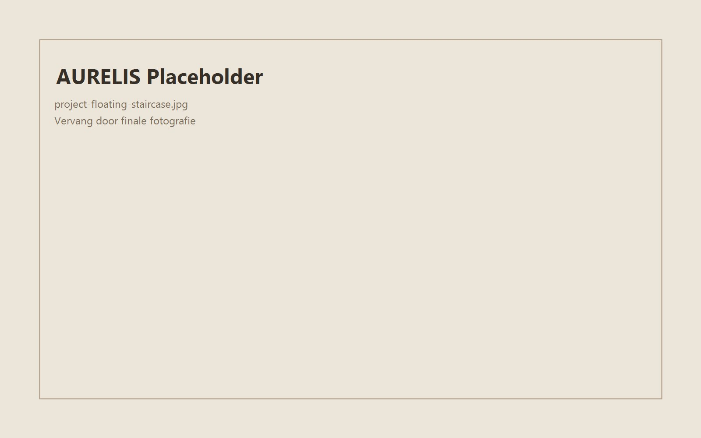
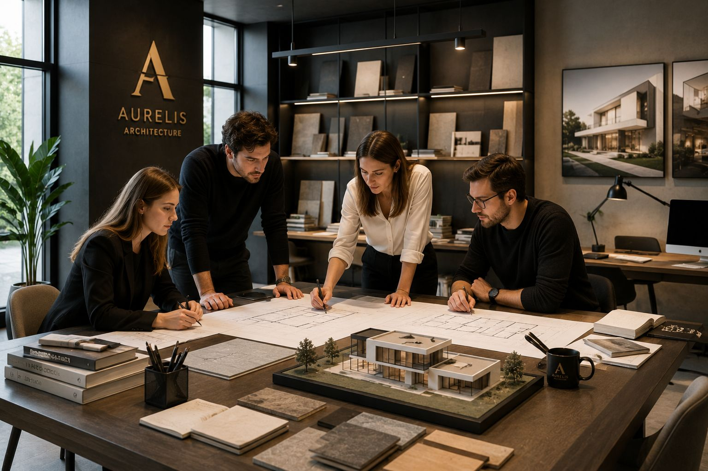
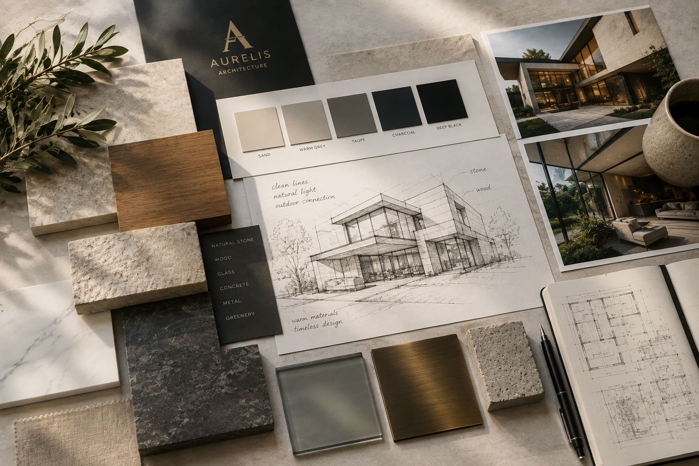
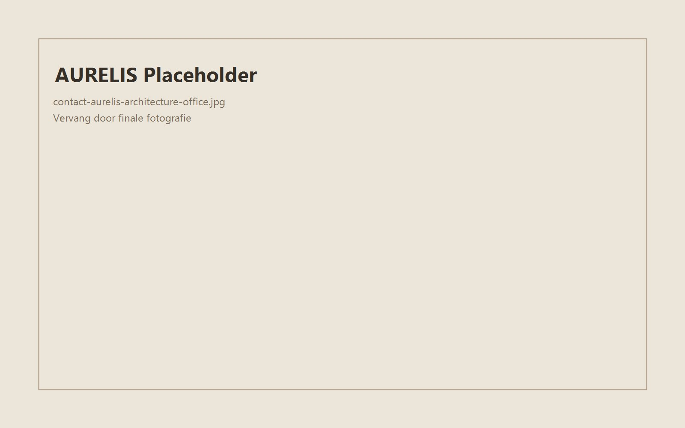

Monolithische volumes, windbeschutte patio en zichtassen naar zee.
AURELIS demo
Een editoriale architectuurwereld voor studio's die rust, precisie en materiaalbeleving willen uitstralen zonder visuele ruis.

Selected Works




Project Focus
Het concept vertrekt vanuit een lineaire leefas met ingesneden lichtschachten en een materiaalpalet dat tactiliteit boven decor plaatst.
Een centrale ruggengraat ordent circulatie en zichtlijnen; nevenfuncties verdwijnen in wandvolumes zodat rust de hoofdrol krijgt.
Ruwe betonvlakken worden verzacht met geoliede eik, natuursteen en matte metaalaccenten voor een warm-monolithisch evenwicht.
Open woonvolume, atelier, patio en slaapvleugel liggen in sequentie voor een heldere dagelijkse flow zonder visuele drukte.

Studio
Deze cijfers zijn demonstratief en tonen hoe architectuurstudio's geloofwaardig data en expertise kunnen presenteren zonder overdaad.
Proces
Intake
Concept
Ontwerp
Vergunning
Uitvoering
Oplevering

Materials
Kies een materiaal en bekijk hoe de sfeer verschuift binnen hetzelfde architecturale grid.

Contact
Demo: dit formulier verzendt geen gegevens en dient alleen als UI-voorbeeld.